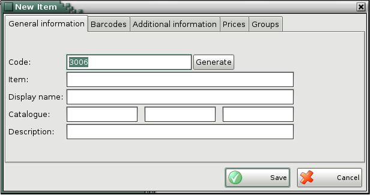
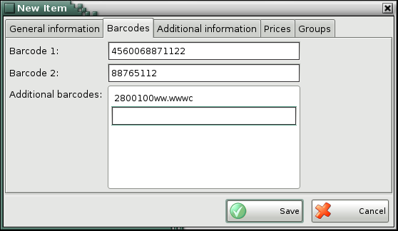
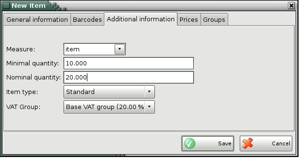
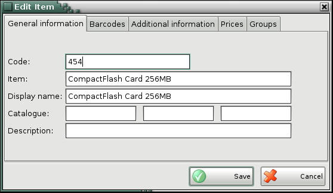
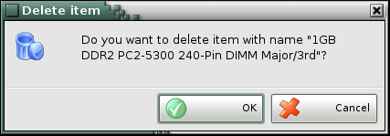

Adding, editing and deleting items
You can add items in the list in the New item window.

Enter the item parameters in the first tab General information: code, name, catalogue and description. A single item can be assigned three catalogue numbers.

In the second tab Barcodes you may enter the item barcodes. In the Barcode 1 and Barcode 2 enter the most frequently used barcodes. Add the additional barcodes by doble click in the corresponding field.
The button Create is for automatic generation of item�s code.
A barcode can contain not only the identity of an item but also its weight.
In order to use such bar codes you need to enter information describing it in a
format like this:
2801234WW.WWWC
28 01234 WW.WWW C
28 - This is a marker that the bar code contains weight.
01234 - This is an unique number of the item that is used to
identify it.
WW.WWW - This is a description of the weight information.
The number of 'W' letters describe how many digits are used for
weight information (usually 5). The '.' shows how many digits
are used for the whole part of the weight and how many digits are used for the
fraction (usually 2 digits are used for the whole part and 3 for the
fraction).
C - A check sum for the above information.
A sample bar code that would match the format described above can be this one:
2801234002507

Use the third tab Additional information to enter
additional parameters of the item: measure, ratio, additional measure, minimal
quantity, nominal quantity and item type. The Measure and
Additional measure fields contain a list of the most frequently
used measures. You can enter a different measure unit and it will be
automatically added to the list. The Ratio field
determines the correlation between the basic and the additional measure, i.e.
the number of bottles in a crate or the number of boxes in a stack.
In the
Minimal quantity field you can define a critical minimum
quantity of the item.
The Item type field determines
whether the item is �standard� or it has a �fixed price�. VAT of items with
fixed prices is fixed to retail prices in Purchase and Sale operations and it
does not depend on the partner�s price group. Selecting an item type allows you
to generate grouped reports �by type�.
The fourth tab of the New item window is Prices. You can enter values for all sale prices of the item: wholesale price, retail price, price group 1, price group 2, price group 3, price group 4, price group 5, price group 6, price group 7, price group 8.
You can edit all item parameters in the Edit item window.

To delete an item from the list, select the corresponding row and click the Delete button or press the Delete key.

Confirm the deletion in the pop-up window to complete the action.
�2006-2015 Microinvest, All rights reserved